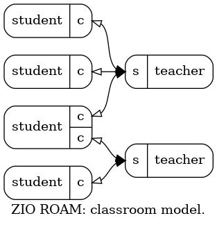
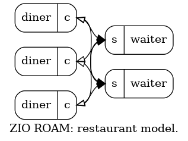
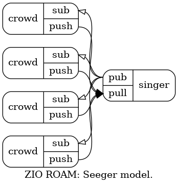

ZIO ROAM
Table of Contents
There are many RPC systems. Here is mine.
1 Protocol
The ZIO remote object access method (ROAM) is an asynchronous, (mostly) symmetric and reliable protocol which allows one peer to issue a query on another and to receive a response. It is asynchronous in that queries and responses may interleave and not retain order. It is symmetric in that once a link between endpoints are established (which may be asymmetric) either end may initiate a query (as required by the system application). It is reliable in the sense that an endpoint may discover if its cohort has become unresponsive and thus may abandon the conversation.
When the query is interpreted as a request to execute some method or procedure on some object held by the remote endpoint then the response is considered to be the return value of that method. Thus the ZIO ROAM protocol can be seen as a generalization the more common and typically more restrictive remote procedure call (RPC) communication pattern. ROAM can simplify to RPC.
Being part of ZIO, ROAM uses the ZIO message for exchanging data. The
four byte message form is not surprisingly ROAM. Like the ZIO flow
protocol, the label holds a JSON-encoded object. All ZIO ROAM
messages must include a label object attribute roam to hold the value
of one of the ROAM message types listed below. Additional label
object attributes are required depending on the ROAM message type,
also in the message type list below.
The prefix header is also required as part of the ZIO ROAM protocol as defined:
seqno- shall hold the count of ZIO ROAM messages that have been sent prior to the current message from the given application socket.
granule- shall hold the local time as determined by the sender and in an application-depended clock (eg, microseconds from Unix epoch).
origin- may be used in an application-dependent manner.
The message payload parts are not strictly required by the ZIO ROAM protocol and their use is application-dependent. It is expected that applications will use them to hold data to be interpreted as method arguments or method return values by the ZIO ROAM endpoint applications.
The ZIO ROAM protocol has three message types. The type is identified
by the roam label object attribute value.
- BEAT
- a heartbeat message to be sent periodically at a predetermined rate in both directions. An endpoint application may elect to terminate further conversation with its cohort if no messages are received within the predefined period. BEAT may be used to refresh this deadline if no other messages need be sent.
- CALL
- a remote method call. Additional label object attributes
are required: a
callidmust provide unique identifier of type string and aqueryattribute of type string must provide the name of a query, command, procedure, etc, to execute on the remote object. Additional application-dependent attributes may be included. - BACK
- a result of a call. Additional label object attributes are
required: a
callidmust provide the unique identifier sent with the corresponding CALL. Astatusattribute shall hold an integer code with semantic meaning taken from HTTP status codes and include at least 200 (OK).
2 Patterns
As mentioned, the ZIO ROAM protocol is "mostly" symmetric. ZeroMQ sockets require some level of asymmetry. For example, clientish sockets (CLIENT/DEALER) must send before serverish (SERVER/ROUTER) may reply. That initial message may be provided by a clientish endpoint by sending a BEAT or if applicable a CALL. After that, the two endpoints are considered to be "linked" and fully symmetric conversation may follow.
Other ZeroMQ sockets are very asymmetric in that they allow only send or recv but not both. The ZIO RPC protocol may still be used but it requires then a pair of sockets, one for each directions.
Thus the ZIO ROAM protocol may be with a variety of socket patterns based on the needs of the applications. This section describes some compatible patterns which emerge.
2.1 Classroom

The ZIO ROAM classroom model is intended for applications that require communication between a central "teacher" and multiple "students". A student may make a CALL on the teacher ("ask a question") and the teacher may make a CALL on a student ("give instruction").
The classroom model is implemented with a single SERVER socket for the "teacher". It binds and to it many CLIENT sockets ("students") connect. A student may send BEAT or CALL at any time. A teacher may send BEAT or CALL to a particular student any time after at least one BEAT or one CALL from that student was received.
A student may simultaneously be in multiple "classrooms" by connecting to multiple teachers' SERVER sockets. Such a student must maintain a unique CLIENT socket for each in order to properly address a teacher.
2.2 Restaurant

The ZIO ROAM restaurant model is intended for applications that require some redundancy. It leverages the round-robin distribution pattern provided by some ZeroMQ sockets.
The restaurant model is implemented with a number of SERVER sockets (each a "waiter") which bind and with a (presumably larger) number of CLIENT sockets (each a "diner") which connect. The waiters are considered identical from the point of view of their connected diners.
A diner may send a BEAT or CALL at any time and does not know which connected waiter receives it. A waiter may send a BEAT or CALL to a particular diner any time after at least one BEAT or one CALL from that diner has been received.
Not drawn, but like with the classroom model, a diner may have multiple CLIENT sockets in order to simultaneously "dine" at more than one restaurant.
2.3 Seeger

The ZIO ROAM seeger model is intended for applications where one individual ("singer") will make a CALL to a "crowd" of peers ("If I had a hammer") and the crowd will send BACK ("I'd hammer in the morning"). The crowd may be very large in number and/or it may not be possible to precisely know each individual or otherwise it may be deemed inconvenient to maintain individual routing IDs needed for use of a SERVER socket. Further, it may be that the central "singer" is well known to all in the crowd.
In this pattern the singer will bind one PUB and one PULL socket. Each peer in the crowd will connect to these a SUB and a PUSH, respectively. The singer will send BEAT and CALL out the PUB and expect BEAT and BACK on the PULL. Each in the crowd will receive BEAT and CALL on their SUB and send BEAT and BACK on their PUSH.
PUB to SUB and PUSH to PULL both allow one way transports and thus implementations of ZIO RPC must not assume one socket for both directions. PUB/SUB can drop packets if HWM is reached and in any case the singer does not know the crowd individuals and thus some in the crowd should expect to miss BEAT or CALL messages and the singer should expect to not receive BEAT and BACK from some individuals some of the time.